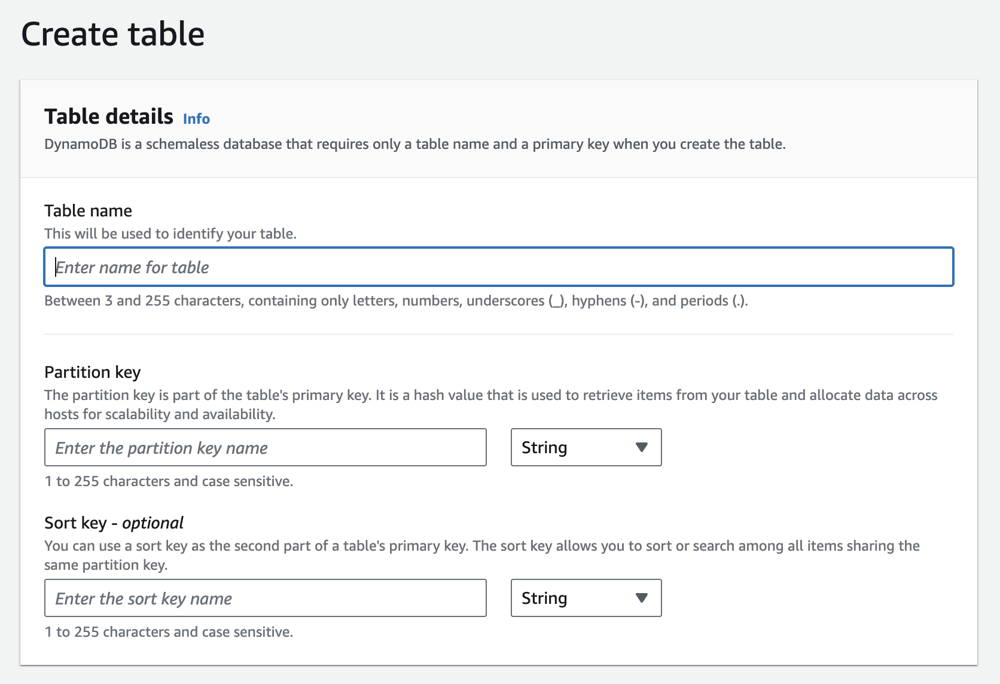
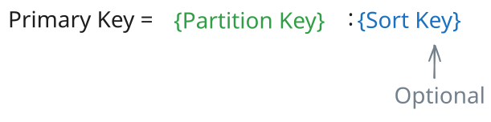
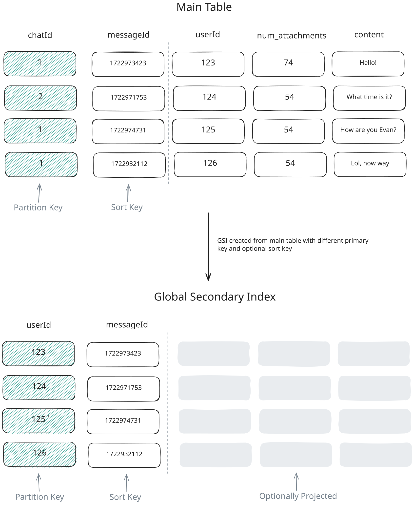
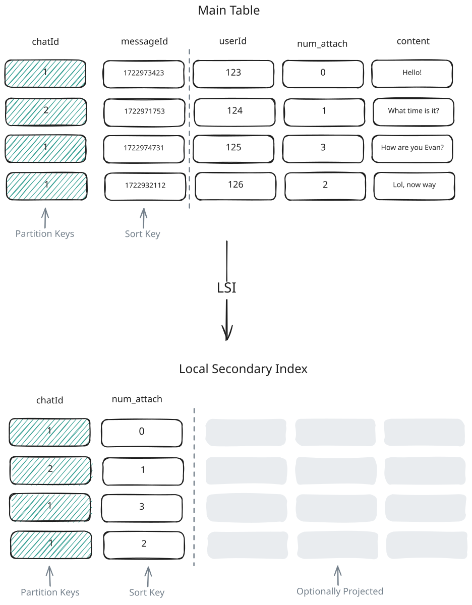
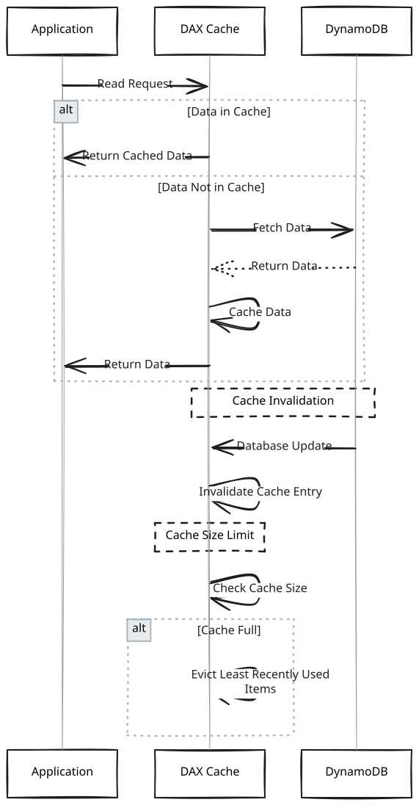

Key Technologies
DynamoDB
Learn about how you can use DynamoDB to solve a large number of problems in System Design.
DynamoDB is a fully-managed, highly scalable, key-value service provided by AWS. Cool, buzz-words. But what the hell does that mean and why does it matter?
- Fully-Managed - This means that AWS takes care of all the operational aspects of the database. The fully-managed nature allows AWS to handle all operational tasks — hardware provisioning, configuration, patching, and scaling — freeing developers to concentrate on application development.
- Highly Scalable - DynamoDB can handle massive amounts of data and traffic. It automatically scales up or down to adjust to your application's needs, without any downtime or performance degradation.
- Key-value - DynamoDB is a NoSQL database, which means it doesn't use the traditional relational database model. Instead, it uses a key-value model that allows for flexible data storage and retrieval.
The moral of the story is that DynamoDB is a super easy to use and can scale to support a wide variety of applications. For system design interviews in particular, it has just about everything you'd ever need from a database. It even supports transactions now! Which neutralizes one of the biggest criticisms of DynamoDB in the past.
Importantly, DynamoDB is not open-source, so we can't as easily describe its internals like we did with breakdowns of open source technologies like Kafka and Redis. Instead, we'll focus more on how you interact with it. In order to look under the hood, we'll rely on the limited information AWS provides via documentation and the DynamoDB Paper.
In this deep dive, we'll break down exactly what you need to know about DynamoDB in order to field any question about it in a system design interview. Along the way, you'll also acquire practical learning that you can later apply in your own projects. Let's break it down!
Candidates often ask me, "am I even allowed to use DynamoDB in an interview?"
The answer is simple, ask your interviewer! Many will say yes, and just expect that you know how to use it. Others may say no, expecting open-source alternatives that avoid any vendor lock-in. As is always the case, just ask 😊
The Data Model
In DynamoDB, data is organized into tables, where each table has multiple items that represent individual records. This is just like a relational database, but with some distinct differences tailored for scalability and flexibility.
Tables - Serve as the top-level data structure in DynamoDB, each defined by a mandatory primary key that uniquely identifies its items. Tables support secondary indexes, enabling queries on non-primary key attributes for more versatile data retrieval.
Items - Correspond to rows in a relational database and contain a collection of attributes. Each item must have a primary key and can contain up to 400KB of data, including all its attributes.
Attributes - Key-value pairs that constitute the data within an item. They can vary in type, including scalar types (strings, numbers, booleans) and set types (string sets, number sets). Attributes can also be nested, allowing for complex data structures within a single item.
Setting up DynamoDB is straightforward: you can create tables directly in the AWS console, and start inserting data immediately. Unlike traditional RDBMS, DynamoDB is schema-less, meaning you don't need to define a schema before inserting data. This means items in the same table can have different sets of attributes, and new attributes can be added to items at any point without affecting existing items. This schema-less design provides high flexibility but requires careful data validation at the application level, as DynamoDB does not enforce attribute uniformity across items.

Create Table
Consider a users table in DynamoDB, structured as follows:
{
"PersonID": 101,
"LastName": "Smith",
"FirstName": "Fred",
"Phone": "555-4321"
},
{
"PersonID": 102,
"LastName": "Jones",
"FirstName": "Mary",
"Address": {
"Street": "123 Main",
"City": "Anytown",
"State": "OH",
"ZIPCode": 12345
}
},
{
"PersonID": 103,
"LastName": "Stephens",
"FirstName": "Howard",
"Address": {
"Street": "123 Main",
"City": "London",
"PostalCode": "ER3 5K8"
},
"FavoriteColor": "Blue"
}Each item represents a user with various attributes. Notice how some users have attributes not shared by others, like FavoriteColor, showing DynamoDB's flexibility in attribute management.
Although DynamoDB uses JSON for data transmission, it's merely a transport format. The actual storage format of DynamoDB is proprietary, allowing users to focus on data modeling without delving into the complexities of physical data storage.
Partition Key and Sort Key
DynamoDB tables are defined by a primary key, which can consist of one or two attributes:
-
Partition Key - A single attribute that, along with the sort key (if present), uniquely identifies each item in the table. DynamoDB uses the partition key's value to determine the physical location of the item within the database. This value is hashed to determine the partition where the item is stored.
-
Sort Key (Optional) - An additional attribute that, when combined with the partition key, forms a composite primary key. The sort key is used to order items with the same partition key value, enabling efficient range queries and sorting within a partition.

Primary Key
In an interview, you'll want to be sure to specify the partition key and, optionally, a sort key when introducing DynamoDB. This choice is important for optimizing query performance and data retrieval efficiency. Just like with any other database, you'll choose a partition key that optimizes for the most common query patterns in your application and keeping data evenly distributed across partitions. In the case you need to perform range queries or sorting, you'll want to also specify the Sort Key.
For example, if you're building a simple group chat application, it would make sense to use the chat_id as the partition key and message_id as the sort key. This way, you can efficiently query all messages for a specific chat group and sort them chronologically before displaying them to users.
Notice we're using a monotonically increasing message_id rather than a timestamp as the sort key. While timestamps might seem intuitive for sorting messages, they don't guarantee uniqueness - multiple messages could be created in the same millisecond. A monotonically increasing ID provides both chronological ordering and uniqueness. The ID can be generated using techniques like:
- Auto-incrementing counters per partition
- UUID v7 (preferred over UUID v1 -- timestamp-first layout makes it naturally sortable as a string, and it doesn't expose the machine's MAC address)
- Snowflake IDs
- ULID
But what is actually happening under the hood?
DynamoDB uses a combination of hash-based partitioning and B-trees to efficiently manage data distribution and retrieval:
Hash Partitioning for Partition Keys: The physical location of the data is determined by hashing the partition key. A request router consults a partition metadata service to map the hashed key to the correct storage node. This is conceptually similar to consistent hashing but DynamoDB uses a centralized partition map and placement service rather than a peer-to-peer hash ring (as described in the original 2007 Dynamo paper). The partition metadata service also handles automatic splitting and merging of partitions as data grows.
B-trees for Sort Keys: Within each partition, DynamoDB organizes items in a B-tree data structure indexed by the sort key. This enables efficient range queries and sorted retrieval of data within a partition.
Composite Key Operations: When querying with both keys, DynamoDB first uses the partition key's hash to find the right node, then uses the sort key to traverse the B-tree and find the specific items.
This two-tier approach allows DynamoDB to achieve both horizontal scalability (through partitioning) and efficient querying within partitions (through B-tree indexing). It's this combination that enables DynamoDB to handle massive amounts of data while still providing fast, predictable performance for queries using both partition and sort keys.
Secondary Indexes
But what if you need to query your data by an attribute that isn't the partition key? This is where secondary indexes come in. DynamoDB supports two types of secondary indexes:
-
Global Secondary Index (GSI) - An index with a partition key and optional sort key that differs from the table's partition key. GSIs allow you to query items based on attributes other than the table's partition key. Since GSIs use a different partition key, the data is stored on entirely different physical partitions from the base table and is replicated separately.
-
Local Secondary Index (LSI) - An index with the same partition key as the table's primary key but a different sort key. LSIs enable range queries and sorting within a partition. Since LSIs use the same partition key as the base table, they are stored on the same physical partitions as the items they're indexing.
Understanding the physical storage difference between GSIs and LSIs is important. GSIs maintain their own separate partitions and replicas, which allows for greater query flexibility but requires additional storage and processing overhead. LSIs, on the other hand, are stored locally with the base table items, making them more efficient for queries within a partition but limiting their flexibility.
Practically, in both cases, these indexes are just configured in the AWS console or via the AWS SDK. DynamoDB handles the rest, ensuring that these indexes are maintained and updated as data changes.
You'll want to introduce a GSI in situations where you need to query data efficiently by an attribute that isn't the partition key. For example, if you have a chat table with messages for your chat application, then your main table's partition key would likely be chat_id with a sort key on message_id. This way, you can easily get all messages for a given chat sorted by time. But what if you want to show users all the messages they've sent across all chats? Now you'd need a GSI with a partition key of user_id and a sort key of message_id.

GSI
LSIs are useful when you need to perform range queries or sorting within a partition on a different attribute than the sort key. Going back to our chat application, we already can sort by message_id within a chat group, but what if we want to query messages with the most attachments within a chat group? We could create an LSI on the num_attachments attribute to facilitate those queries and quickly find messages with many attachments. One important caveat: LSIs can only be defined at table creation time and cannot be added or removed later, so you need to plan ahead.

LSI
| Feature | Global Secondary Index (GSI) | Local Secondary Index (LSI) |
|---|---|---|
| Definition | Index with a different partition key than the main table | Index with the same partition key as the main table but a different sort key |
| When to Use | When you need to query on attributes that are not part of the primary key | When you need additional sort keys for querying within the same partition key |
| Size Restrictions | No size restrictions on items in the index | Limited to 10 GB per partition key |
| Throughput | Separate read/write capacity units from the base table | Shares the read/write capacity units of the base table |
| Consistency | Eventually consistent only | Supports both eventually consistent (default) and strongly consistent reads |
| Creation | Can be added or removed at any time | Must be defined at table creation time and cannot be removed |
| Deletion | Deleting a GSI does not affect the base table items | Deleting an LSI is not possible without deleting the base table |
| Maximum Count | Up to 20 GSIs per table | Up to 5 LSIs per table |
| Use Case Examples | Use GSI for global search across all partitions, such as searching by email in a user database | Use LSI for local search within partitions, such as finding recent orders within a customer partition |
But what is actually happening under the hood?
Secondary indexes in DynamoDB are automatically maintained by the system. GSIs are implemented as separate internal tables, while LSIs are co-located with the base table:
-
Global Secondary Indexes (GSIs):
- Each GSI is essentially a separate table with its own partition scheme.
- When an item is added, updated, or deleted in the main table, DynamoDB asynchronously updates the GSI.
- GSIs use the same hash partitioning mechanism as the main table, but with different partition and sort keys.
- This allows for efficient querying on non-primary key attributes across all partitions.
-
Local Secondary Indexes (LSIs):
- LSIs are co-located with the main table's partitions, sharing the same partition key.
- They maintain a separate B-tree structure within each partition, indexed on the LSI's sort key.
- Updates to LSIs are done synchronously with the main table updates. LSI reads support both eventually consistent (default) and strongly consistent reads, just like the base table.
-
Index Maintenance:
- DynamoDB automatically propagates changes from the main table to all secondary indexes.
- For GSIs, this propagation is asynchronous (eventually consistent). For LSIs, updates happen synchronously with the base table write.
- The system manages the additional write capacity required for index updates.
-
Query Processing:
- When a query uses a secondary index, DynamoDB routes the query to the appropriate index table (for GSIs) or index structure (for LSIs).
- It then uses the index's partition and sort key mechanics to efficiently retrieve the requested data.
Accessing Data
We've already touched on this a bit, but let's dive deeper into how you can access data in DynamoDB. There are two primary ways to access data in DynamoDB: Scan and Query operations.
Scan Operation - Reads every item in a table or index and returns the results in a paginated response. Scans are useful when you need to read all items in a table or index, but they are inefficient for large datasets due to the need to read every item and should be avoided if possible.
Query Operation - Retrieves items based on the primary key or secondary index key attributes. Queries are more efficient than scans, as they only read items that match the specified key conditions. Queries can also be used to perform range queries on the sort key.
Unlike traditional SQL databases, DynamoDB's primary interface is through the AWS SDK or the AWS console rather than a standalone query language. That said, DynamoDB does support PartiQL, a SQL-compatible query language that lets you use familiar SELECT, INSERT, UPDATE, and DELETE syntax. Under the hood, PartiQL operations translate to the same DynamoDB operations, so it's a convenience layer rather than a fundamentally different capability. Let's consider a simple example of querying from a user table.
In SQL, you'd write:
SELECT * FROM users WHERE user_id = 101But in DynamoDB, this would be translated to a query operation like this:
const params = {
TableName: 'users',
KeyConditionExpression: 'user_id = :id',
ExpressionAttributeValues: {
':id': 101
}
};
dynamodb.query(params, (err, data) => {
if (err) console.error(err);
else console.log(data);
});To perform a scan operation, you'd use the scan method instead of query.
SQL scan equivalent:
SELECT * FROM usersDynamoDB scan operation:
const params = {
TableName: 'users'
};
dynamodb.scan(params, (err, data) => {
if (err) console.error(err);
else console.log(data);
});When working with Dynamo, you typically want to avoid expensive scan operations where ever possible. This is where careful data modeling comes into play. By choosing the right partition key and sort key, you can ensure that your queries are efficient and performant.
CAP Theorem
You'll typically make some early decisions about consistency and availability during the non-functional requirements phase of your interview. As such, it's important that you choose a database that aligns with those requirements.
Most candidates I work with choose DynamoDB when they need high availability and scalability. This isn't wrong, but just like the traditional SQL vs NoSQL debate, it's outdated.
DynamoDB supports two consistency models for read operations: eventual consistency and strong consistency. Importantly, this is not a table-level configuration -- you choose the consistency model on each individual read request by setting ConsistentRead=true in your GetItem, Query, or Scan calls.
Eventual Consistency (Default) - Every read is eventually consistent unless you explicitly request otherwise. This provides the highest availability and lowest latency, but you might not see the most recent write immediately. DynamoDB generally behaves as an AP system with BASE properties.
Strong Consistency - When you set ConsistentRead=true, DynamoDB ensures the read reflects all successful writes that occurred before the read. This costs twice the read capacity (1 RCU per 4KB instead of 0.5) and may have slightly higher latency, but guarantees you see the latest data.
This per-request flexibility means you can use DynamoDB in scenarios that require strong consistency (like a booking system) while still defaulting to eventual consistency for read-heavy, latency-sensitive paths. DynamoDB also supports ACID transactions via TransactWriteItems and TransactGetItems, which provide serializable isolation across up to 100 items spanning multiple tables.
Strong consistent reads are only supported on the base table and Local Secondary Indexes (LSIs). Global Secondary Indexes (GSIs) only support eventually consistent reads, so keep this in mind when designing access patterns that require strong consistency.
But what is actually happening under the hood?
DynamoDB's consistency models are implemented through its distributed architecture and replication mechanisms:
Eventually Consistent Reads (Default):
- Reads can be served by any of the three replicas in the partition's replication group
- Since the leader replicates writes to followers asynchronously (after quorum acknowledgment), a follower might not have the very latest write yet
- Consumes less read capacity (0.5 RCU per 4KB) and provides lower latency
Strongly Consistent Reads:
- The read request is routed directly to the leader node for the partition
- Since all writes go through the leader first, it always has the most current data
- Consumes more read capacity (1 RCU per 4KB) and may have higher latency
- Not supported on Global Secondary Indexes (GSIs)
Architecture and Scalability
Scalability
DynamoDB scales through auto-sharding and load balancing. When a partition reaches capacity (in size or throughput), DynamoDB automatically splits it and redistributes data. Hash-based partitioning ensures even distribution across nodes, balancing traffic and load.
AWS's global infrastructure enhances this scalability. Global Tables allow real-time replication across regions, enabling local read/write operations worldwide. This reduces latency and improves user experience. DynamoDB also integrates across multiple Availability Zones in each region, so that the redundancy ensures continuous service and data durability.
Choosing the right regions and zones is important because it optimizes performance and compliance, considering user proximity and regulations. Data locality, in general, is key for reducing latency and improving throughput.
When designing global applications in your interview, simply mentioning Global Tables for cross-region replication is often sufficient.
Fault Tolerance and Availability
DynamoDB is designed to provide high availability and fault tolerance through its distributed architecture and data replication mechanisms. The service automatically replicates data across multiple Availability Zones within a region, so that data is durable and accessible even in the event of hardware failures or network disruptions.
DynamoDB automatically replicates your data across three Availability Zones within a region -- this is not user-configurable. Each partition maintains three replicas (one leader and two followers) managed entirely by AWS. For cross-region replication, you can enable Global Tables to add replicas in additional AWS regions.
Under the hood, each partition uses Multi-Paxos consensus with a leader-based replication group of three nodes. The leader handles all writes: it generates a write-ahead log (WAL) entry and sends it to its peers, and the write is acknowledged once a quorum (2 of 3) persists the log record. For strongly consistent reads, DynamoDB routes the request directly to the leader, which always has the most up-to-date data. For eventually consistent reads, any of the three replicas can serve the request, which provides lower latency but might return slightly stale data.
Security
Data is encrypted at rest by default in DynamoDB, so your data is secure even when it's not being accessed. DynamoDB also enforces TLS for all API calls, so data in transit is always encrypted -- there's no separate configuration needed.
DynamoDB integrates with AWS Identity and Access Management (IAM) to provide fine-grained access control over your data. You can create IAM policies that specify who can access your data and what actions they can perform. This allows you to restrict access to your data to only those who need it.
Additionally, you can use Virtual Private Cloud (VPC) endpoints to securely access DynamoDB from within your VPC without exposing your data to the public internet. This provides an extra layer of security by ensuring that your data is only accessible from within your VPC.
In an interview, when working with sensitive user data it may be worth mentioning that you know DynamoDB encrypts data at rest by default and enforces encryption in transit via TLS. Beyond this, everything else is probably overkill.
Pricing Model
Pricing might seem like something totally irrelevant to an interview, but bear with me, understanding the pricing model introduces clear constraints on your architecture.
There are two pricing models for DynamoDB: on-demand and provisioned capacity. On-demand pricing charges per request, making it suitable for unpredictable workloads. Provisioned capacity, on the other hand, requires users to specify read and write capacity units, which are billed hourly. This model is more cost-effective for predictable workloads but may result in underutilized capacity during low-traffic periods.
Pricing is based on, what Amazon calls, read and write capacity units. These units are a measure of the throughput you need for your DynamoDB table. You can think of them as a measure of how much data you can read or write per second.
A single read capacity unit allows you to read up to 4KB of data per second. A single write capacity unit allows you to write up to 1KB of data per second.
| Feature | Cost | Details |
|---|---|---|
Read Capacity Unit (RCU) | $1.12 per million reads (4KB each) | Provides one strongly consistent read per second for items up to 4KB, or two eventually consistent reads per second. |
Write Capacity Unit (WCU) | $5.62 per million writes (1KB each) | Provides one write per second for items up to 1KB. |
While cost itself is not particularly interesting in an interview, it's useful to have a high level understanding of the numbers. Each DynamoDB partition supports up to 3,000 read capacity units and 1,000 write capacity units. This means a single partition can handle 12MB of reads per second (3,000 × 4KB) and 1MB of writes per second (1,000 × 1KB). DynamoDB handles sharding and auto-scaling automatically, but these numbers are useful for back-of-the-envelope calculations.
For example, if you were planning on storing YouTube views in DynamoDB, each write (regardless of how small) consumes at least 1 WCU since DynamoDB rounds up to the nearest 1KB. With 1,000 WCU per partition, a single partition supports about 1,000 writes per second. If you expect 10,000,000 views per second, you'd need roughly 10,000 partitions. Using provisioned capacity pricing (~$0.00065 per WCU-hour in us-east-1), that's 10,000,000 WCU × $0.00065/hour × 24 hours ≈ $156,000 per day. On-demand pricing would be significantly higher. These numbers can help you gut check whether your application will be able to handle the expected load without incurring unrealistic costs.
Advanced Features
DAX (DynamoDB Accelerator)
Fun fact, DynamoDB has a purpose-built, in-memory cache called DynamoDB Accelerator (DAX). So there may be no need to introduce additional services (Redis, Memcached) into your architecture.
DAX is a caching service designed to enhance DynamoDB performance by delivering microsecond response times for read-heavy workloads. Using DAX requires swapping your DynamoDB client for the DAX client SDK (available for Java, .NET, Node.js, Python, Go) -- the API is compatible, so the changes are minimal, but it's not completely transparent.
DAX operates as both a read-through and write-through cache: it caches read results and delivers them directly to applications, and writes data to both the cache and DynamoDB. An important nuance is that DAX only auto-invalidates cached items for writes that go through DAX itself. If you update DynamoDB directly (bypassing DAX), those cached entries can remain stale until they expire via TTL or eviction. For more details, refer to this AWS blog post.

DAX
DAX maintains two caches: an item cache (for GetItem/BatchGetItem results) and a query cache (for Query and Scan results). Both are always active -- there's no configuration to choose one over the other. One important caveat: DAX does not cache strongly consistent reads. When you request a strongly consistent read through DAX, it passes the request directly to DynamoDB and returns the result without caching it.
Streams
Dynamo also has built-in support for Change Data Capture (CDC) through DynamoDB Streams. Streams capture changes to items in a table and make them available for processing in real-time. Any change event in a table, such as an insert, update, or delete operation, is recorded in the stream as a stream record to be consumed by downstream applications.
This can be used for a variety of use cases, such as triggering Lambda functions in response to changes in the database, maintaining a replica of the database in another system, or building real-time analytics applications.
Consistency with Elasticsearch - DynamoDB Streams can be used to keep an Elasticsearch index in sync with a DynamoDB table. This is useful for building search functionality on top of DynamoDB data.
Real-time Analytics - You can enable Kinesis Data Streams on your DynamoDB table, then pipe the change data into Kinesis Data Firehose to load into S3, Redshift, or OpenSearch for real-time analytics. (Note: Firehose can't read DynamoDB Streams directly -- you need Kinesis Data Streams or a Lambda function as the intermediary.)
Change Notifications - You can use DynamoDB Streams to trigger Lambda functions in response to changes in the database. This can be useful for sending notifications, updating caches, or performing other actions in response to data changes.
DynamoDB in an Interview
When to use It
In interviews, you can often justify using DynamoDB for almost any persistence layer needs. It's highly scalable, durable, supports transactions, and offers single-digit millisecond latencies (or microsecond latencies with DAX). Additional features like DAX for caching and DynamoDB Streams for cross-store consistency make it even more powerful. So if your interviewer allows, its probably a great option.
However, it's important to know when not to use DynamoDB because of its specific downsides.
Knowing its limitations
There are a few reasons why you may opt for a different database (beyond just generally having more familiarity with another technology):
-
Cost Efficiency: DynamoDB's pricing model is based on read and write operations plus stored data, which can get expensive with high-volume workloads. If you need hundreds of thousands of writes per second, the cost might outweigh the benefits.
-
Complex Query Patterns: If your system requires complex queries, such as those needing joins or ad-hoc aggregations, DynamoDB might not cut it. DynamoDB does support transactions across multiple tables (up to 100 items per transaction), but it lacks the flexible querying capabilities of SQL databases.
-
Data Modeling Constraints: DynamoDB demands careful data modeling to perform well, optimized for key-value and document structures. If you find yourself frequently using Global Secondary Indexes (GSIs) and Local Secondary Indexes (LSIs), a relational database like PostgreSQL might be a better fit.
-
Vendor Lock-in: Choosing DynamoDB means locking into AWS. Many interviewers will want you to stay vendor-neutral, so you may need to consider open-source alternatives to avoid being tied down.
Summary
There we have it. DynamoDB is versatile, powerful, and a joy to work with. In an interview, it's a solid choice for most use cases, but you'll want to be aware of its limitations and have a solid understanding of how it works, including how to choose the right data model, partition key, sort key, secondary indexes, and know when to enable advanced features like DAX and Streams. Remember that DynamoDB supports transactions (including across multiple tables), so the old "NoSQL means no transactions" criticism doesn't hold anymore.
Test Your Knowledge
Answer the question below to find your gaps.
Question 1 of 15
What does it mean that DynamoDB is a 'fully-managed' service?
1
It automatically writes application code for you
2
AWS handles provisioning, configuration, and scaling
3
It requires no configuration or setup
4
It only works with other AWS services